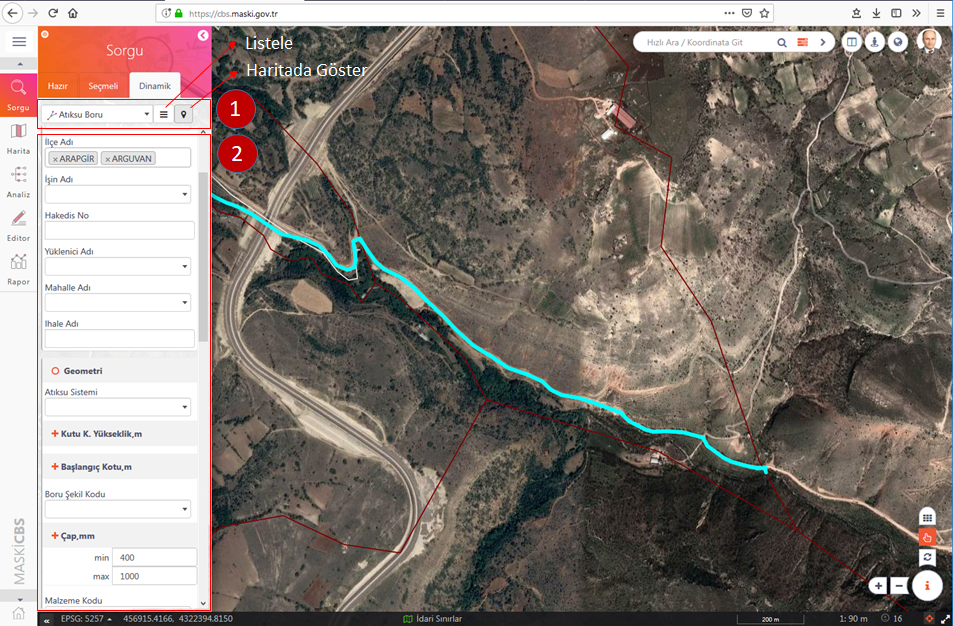
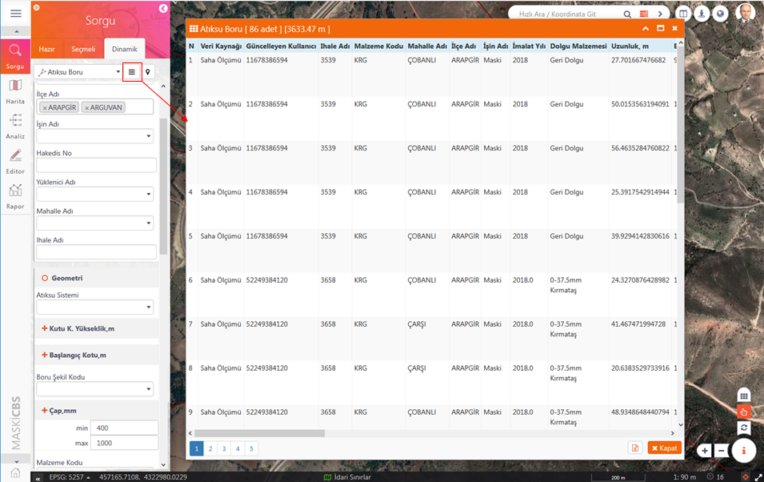
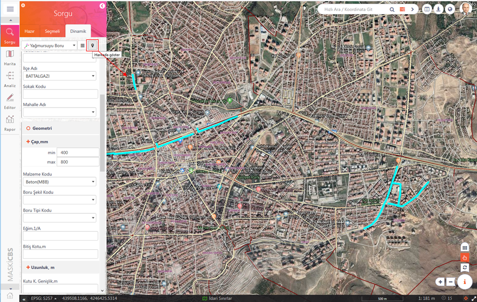

ODAGIS+ Web arayüzünde solda bulunan panelde 3. Sekmede Dinamik/Detaylı Sorgular yer almaktadır. Bu sorgulama arayüzünde seçilecek herbir tabaka/tablo için kolonlar filtrelenerek dinamik bir şekilde sorgu oluşturulabilmektedir.
 Kullanımı:
Kullanımı:
1- Öncelikle Panelin üst kısımında bulunan seçme kutusundan istenilen sorgu seçilir.
2- Seçilen tabaka/tabloya göre alt kısımda listelenen kolonlara değer girilerek veya mevcut değerlerden seçim yapılarak sorgu filtresi oluşturulur.

3- En üstte tabaka seçme kutusunun yanındaki "Liste" butonuna basılarak filtrelenen kolonlara ait sorgu sonuçlarının listelenmesi sağlanır.

4- En üstte tabaka seçme kutusunun yanındaki "Haritada Gösterim" butonuna basılarak filtrelenen kolonlara ait sorgu sonuçlarının harita üzerinde görüntülenmesi sağlanır.
